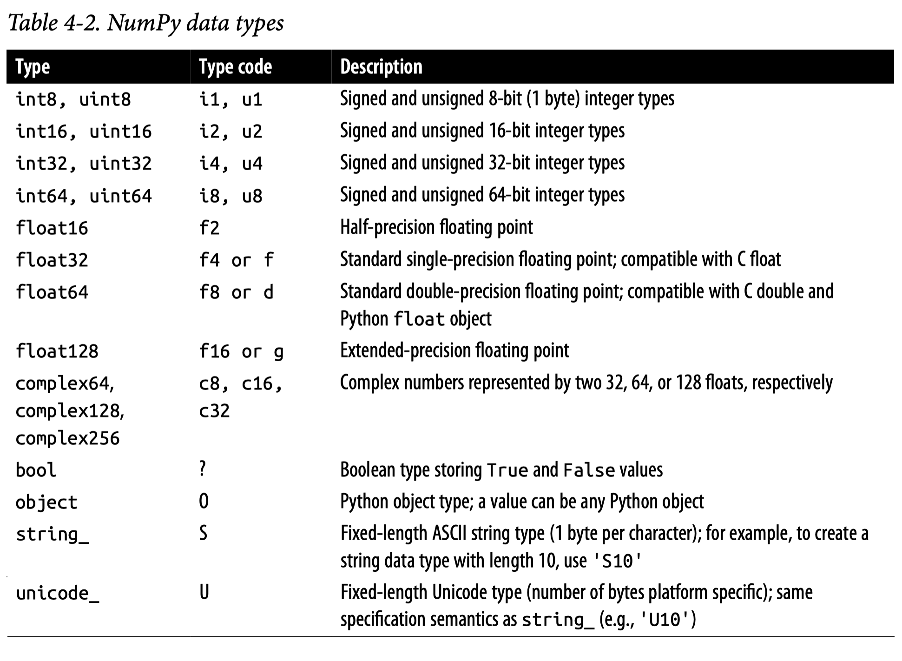

x = "Love me tender" # x: string objectNumPy and pandas
Mixed
Python Objects
- 파이썬의 모든 것은 객체(object)이며, 특정 클래스(class)의 인스턴스(instance)임
- 인스턴스는 클래스에서 정의된 속성(attribute)과 메서드(method)를 전달 받음(inherited)
x는 str 클래스(빵의 틀)의 인스턴스(빵)가 되면서, str 클래스의 속성과 함수를 사용할 수 있게 됨
x.upper() # upper()라는 함수를 호출'LOVE ME TENDER'이는 다음과 같이 원래 str 클래스의 메서드를 사용하는 것과 동일함
str.upper(x)'LOVE ME TENDER'마찬가지로,
x.count('e') # 함수에 인자(argument)가 포함된 경우4str.count(x, "e")4- 이렇게, 각 인스턴스가 가지는 함수를 호출해서 적용할 수 있는데
- 이 때 그 함수를 메서드(method)라고 함
- 이는 각 클레스에서 고유하게 정의된 함수들을 사용할 수 있게 함
- 이 경우
str이라는 클래스에서 정의된 함수들을 사용할 수 있음
파이썬의 고유한 함수들, 예를 들어
type(x)strlen(x) # 문자열의 길이14pandas 패키지의 한 클래스를 살펴보면,
import pandas as pd
pd.DataFrame?pd.DataFramepandas.core.frame.DataFrameDataFrame이라는 클래스가 정의되는데, 이는 사실 다음과 같은 폴더 위치에 있는 frame.py 마듈에서 정의된 클래스임
pd.core.frame.DataFrame
df = pd.DataFrame({'mango': [1, 2, 3], 'apple': [4, 5, 6]})
df mango apple
0 1 4
1 2 5
2 3 6- 이 때, df는 DataFrame 클래스의 인스턴스(instance)가 되면서, DataFrame 클래스(class)에서 정의된 속성(attribute)과 함수를 사용할 수 있게 됨.
- 이 함수를 메서드(method)라고 함
df.columns # columns라는 속성을 추출Index(['mango', 'apple'], dtype='object')df.head(2) # head()라는 함수를 호출 mango apple
0 1 4
1 2 5df.columns.sort_values() # df.columns는 Index object이고, 이에 대한 sort_values()라는 함수를 호출Index(['apple', 'mango'], dtype='object')데이터 시퀀스
대표적인 순서를 가진 객체: tuple, list, dictionary
# Tuple
t = (1, 2, 3)
t[0]1# Tuple
t = 1, 2, 3
t(1, 2, 3)# List
l = [1, 2, 3]
l[0]1# Dictionary
d = {'mango': [1, 2], 'apple': [3, 4]}
d['mango'][1, 2]d.keys()dict_keys(['mango', 'apple'])d.values()dict_values([[1, 2], [3, 4]])Numpy & pandas
Python 언어는 수치 계산을 위해 디자인되지 않았기 때문에, 데이터 분석에 대한 효율적이고 빠른 계산이 요구되면서 C/C++이라는 언어로 구현된 NumPy (Numerical Python)가 탄생하였고, Python 생태계 안에 통합되었음. 기본적으로 Python 언어 안에 새로운 언어라고 볼 수 있음. 데이터 사이언스에서의 대부분의 계산은 NumPy의 ndarray (n-dimensioal array)와 수학적 operator들을 통해 계산됨.
데이터 사이언스가 발전함에 따라 단일한 floating-point number들을 성분으로하는 array들의 계산에서 벗어나 칼럼별로 다른 데이터 타입(string, integer, object..)을 포함하는 tabular 형태의 데이터를 효율적으로 처리해야 할 필요성이 나타났고, 이를 다룰 수 있는 새로운 언어를 NumPy 위에 개발한 것이 pandas임. 이는 기본적으로 Wes Mckinney에 의해 독자적으로 개발이 시작되었으며, 디자인적으로 불만족스러운 점이 지적되고는 있으나 데이터 사이언스의 기본적인 언어가 되었음.
NumPy와 pandas에 대한 자세한 내용은 Python for Data Analysis by Wes MacKinney 참고
특히, NumPy는 Ch.4 & appendices
NumPy
- 수학적 symbolic 연산에 대한 구현이라고 볼 수 있으며,
- 행렬(matrix) 또는 벡터(vector)를 ndarray (n-dimensional array)이라는 이름으로 구현함.
- 사실상 정수(
int)나 실수(float)의 한가지 타입으로 이루어짐.
- 고차원의 arrays 가능
- 사실상 정수(

Source: Medium.com
가령, 다음과 같은 행렬 연산이 있다면,
\(\begin{bmatrix}1 & 2 \\ 3 & 4 \\ 5 & 6 \end{bmatrix} \begin{bmatrix}2 \\ -1 \end{bmatrix} = \begin{bmatrix}0 \\ 2 \\ 4 \end{bmatrix}\)
import numpy as np
A = np.array([[1, 2],
[3, 4],
[5, 6]]) # 3x2 matrix
X = np.array([[2],
[-1]]) # 2x1 matrix
A @ X # A * X : matrix multiplicationarray([[0],
[2],
[4]])A.dot(X) # A @ X와 동일array([[0],
[2],
[4]])A + A # element-wise additionarray([[ 2, 4],
[ 6, 8],
[10, 12]])2 * A - 1 # braodcastingarray([[ 1, 3],
[ 5, 7],
[ 9, 11]])np.exp(A) # element-wisearray([[ 2.72, 7.39],
[ 20.09, 54.6 ],
[148.41, 403.43]])Python vs. NumPy
a = 2**31 - 1
print(a)
print(a + 1)2147483647
2147483648a = np.array([2**31 - 1], dtype='int32')
print(a)
print(a + 1)[2147483647]
[-2147483648]
Source: Ch.4 in Python for Data Analysis (3e) by Wes McKinney
pandas
Series & DataFrame
Series
1개의 칼럼으로 이루어진 데이터 포멧: 1d numpy array에 labels을 부여한 것으로 볼 수 있음.
DataFrame의 각 칼럼들을 Series로 이해할 수 있음.

Source: Practical Data Science
DataFrame
각 칼럼들이 한 가지 데이터 타입으로 이루어진 tabular형태 (2차원)의 데이터 포맷
- 각 칼럼은 기본적으로 한 가지 데이터 타입인 것이 이상적이나, 다른 타입이 섞여 있을 수 있음
- NumPy의 2차원 array의 각 칼럼에 labels을 부여한 것으로 볼 수도 있으나, 여러 다른 기능들이 추가됨
- NumPy의 경우 고차원의 array를 다룰 수 있음: ndarray
- 고차원의 DataFrame과 비슷한 것은 xarray가 존재
- Labels와 index를 제외한 데이터 값은 거의 NumPy ndarray로 볼 수 있음
(pandas.array 존재)
Source: Practical Data Science
NumPy의 ndarray <-> pandas의 DataFrame 상호 변환
A = np.array([[1, 2],
[3, 4],
[5, 6]]) # 3x2 matrix
df = pd.DataFrame(A, columns=["A1", "A2"])
df A1 A2
0 1 2
1 3 4
2 5 6# 데이터 값들은 NumPy array
df.values # 함수 호출이 아니라 속성(attribute) 접근이므로 ()가 없음array([[1, 2],
[3, 4],
[5, 6]])type(df)pandas.core.frame.DataFrame한 개의 Column을 추출
보통 Series로 반환됨
s = df["A1"] # A1 칼럼 선택
s # DataFrame의 column 이름이 Series의 name으로 전환
# 0 1
# 1 3
# 2 5
# Name: A1, dtype: int64df
# A1 A2
# 0 1 2
# 1 3 4
# 2 5 6type(s)pandas.core.series.Seriess.values # 또는 s.to_numpy(); Series의 값은 NumPy 1d arrayarray([1, 3, 5])df2 = df[["A1"]] # list로 들어가면 DataFrame으로 반환
df2 A1
0 1
1 3
2 5type(df2)pandas.core.frame.DataFrameIndex objects
frame = pd.DataFrame(np.arange(6).reshape((2, 3)),
index=pd.Index(["Ohio", "Colorado"], name="state"),
columns=pd.Index(["one", "two", "three"], name="number"))
framenumber one two three
state
Ohio 0 1 2
Colorado 3 4 5frame.index # 함수 호출이 아니라 속성(attribute) 접근이므로 ()가 없음Index(['Ohio', 'Colorado'], dtype='object', name='state')frame.columns # columns도 index objectIndex(['one', 'two', 'three'], dtype='object', name='number')Index는 times series에 특화
파일 다운로드: Bike Sharing in Washington D.C. Dataset
bike = pd.read_csv('data/day.csv', index_col='dteday', parse_dates=True)
bike.head(3) instant season yr mnth holiday weekday workingday \
dteday
2011-01-01 1 1 0 1 0 6 0
2011-01-02 2 1 0 1 0 0 0
2011-01-03 3 1 0 1 0 1 1
weathersit temp atemp hum windspeed casual registered cnt
dteday
2011-01-01 2 0.34 0.36 0.81 0.16 331 654 985
2011-01-02 2 0.36 0.35 0.70 0.25 131 670 801
2011-01-03 1 0.20 0.19 0.44 0.25 120 1229 1349 bike.plot(kind='line', y=['casual', 'registered'], figsize=(8, 4), title='Bike Sharing')
plt.show()
DataFrame의 연산
NumPy의 ndarray들이 연산되는 방식과 동일하게 series나 DataFrame들의 연산 가능함
df + 2 * df A1 A2
0 3 6
1 9 12
2 15 18np.log(df) A1 A2
0 0.00 0.69
1 1.10 1.39
2 1.61 1.79사실 연산은 index를 align해서 시행됨
number one two three
state
Ohio 0 1 2
Colorado 3 4 5number one two three
state
Ohio 0 2 4
Floria 6 8 10frame1 + frame2number one two three
state
Colorado NaN NaN NaN
Floria NaN NaN NaN
Ohio 0.00 3.00 6.00Missing
NaN, NA, None
- pandas에서는 missing을 명명하는데 R의 컨벤션을 따라
NA(not available)라 부름.
- 대부분의 경우에서 NumPy object
NaN(np.nan)을NA을 나타내는데 사용됨.
np.nan은 실제로 floating-point의 특정 값으로 float64 데이터 타입임. Integer 또는 string type에서 약간 이상하게 작동될 수 있음.
- Python object인
None은 pandas에서NA로 인식함.
- 현재
NA라는 새로운 pandas object 실험 중임
NA의 handling에 대해서는 교재 참고
.dropna(), .fillna(), .isna(), .notna()
- Mckinney’s: 7.1 Handling Missing Data,
- Working with missing data
s = pd.Series([1, 2, np.nan])
s0 1.00
1 2.00
2 NaN
dtype: float64# type을 변환: float -> int
s.astype("Int64")0 1
1 2
2 <NA>
dtype: Int64s = pd.Series(["a", "b", np.nan])
s0 a
1 b
2 NaN
dtype: object# type을 변환: object -> string
s.astype("string")0 a
1 b
2 <NA>
dtype: strings = pd.Series([1, 2, np.nan, None, pd.NA])
s0 1
1 2
2 NaN
3 None
4 <NA>
dtype: objectMissing인지를 확인: .isna(), .notna()
s.isna() # or s.isnull()0 False
1 False
2 True
3 True
4 True
dtype: bools.notna() # or s.notnull()0 True
1 True
2 False
3 False
4 False
dtype: boolpandas에서는 ExtensionDtype이라는 새로운 데이터 타입이 도입되었음.
s2 = pd.Series([2, pd.NA], dtype=pd.Int8Dtype())
s2.dtype # date type 확인Int8Dtype()import pyarrow as pa
s2 = pd.Series([2, pd.NA], dtype=pd.ArrowDtype(pa.uint16()))
s2.dtypeuint16[pyarrow]